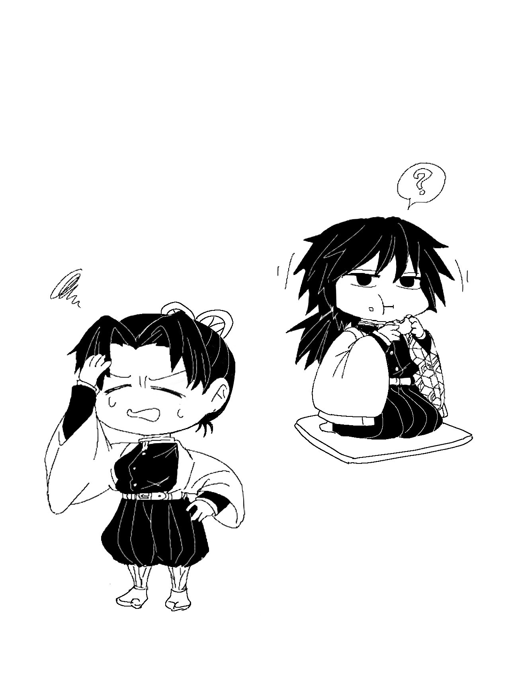

《不要生氣》
『⋯⋯』
『⋯⋯』
什麼情況這是？
想說一大清早就聽見敲門聲，有急事嗎？還是有傷患需要馬上處理？
一面如此思考的忍打開大門。
沒有急事、也沒有傷者病患。
只有一臉漠然的富岡義勇站在門口。
『⋯⋯富岡先生。』忍按捺心中的微慍，『這麼早，有什麼事嗎？』
『⋯⋯胡蝶在嗎？』
那張臉仍是一號表情。
連聲早安都不說。
『真是的⋯⋯明明說過好幾次了。』忍嘆氣，『姓胡蝶的又不是只有姐姐一個人。』
『⋯⋯』富岡不語。
到底是有沒有聽到？
一定有聽到吧，只是那個樣子實在很難讓人不生氣。
『早上好，富岡君。』
正當忍在心底碎念不平時，身後傳來了熟悉的招呼聲。
是胡蝶香奈惠。
『不好意思，麻煩你跑這一趟。』
『反正順路。』
富岡將布包遞交到香奈惠手上。
『要不要進來喝杯茶？』香奈惠邀請道，『剛好有人送了美味的饅頭過來。』
富岡沉吟半晌，然後微微頷首。
『那就打擾了。』
（今天是吹什麼風來著？）
忍瞠目結舌，臉上藏不住的驚訝。
＊＊＊
偷偷瞄了一眼跟在後面的男子，仍是一副搞不清楚究竟在想什麼的表情。
（明明那天拒絕了逛街的邀約，現在卻答應進來喝茶，搞什麼⋯⋯）
忍沒好氣的心想。
帶領富岡進了接待用的和室，忍到廚房泡茶準備點心。
香奈惠則和富岡隨意地聊著天，不過大部分還是香奈惠在說話，富岡的回應都十分簡短。
但香奈惠似乎一點也不介意，臉上始終保持著笑容。
（姐姐的修養真是太好了，要我這麼跟這溝通障礙聊天我根本聊不下去⋯⋯）
『茶來了。』忍端著茶杯和饅頭裝盤進房。
『謝謝你。』香奈惠道著謝，不忘稱讚：『忍泡的茶最棒了。』
『還好啦。』有點不好意思，忍將饅頭放下。
盤中有四顆咖啡色的饅頭，應該是黑糖之類的口味。
『請用吧，富岡君。』香奈惠開心的說，『聽說是很有名的店，你嚐嚐看。』
『那我就──』
正當伸出手準備拿取時，猝不及防，一隻纖纖小手搶先取走了富岡正要拿的那顆饅頭。
『看起來很好吃，姐姐也還沒吃吧？吃一顆如何？』
忍將饅頭遞到香奈惠面前，後者笑了一下，有點尷尬。
富岡的手還停在半空中，沒有什麼特別的表情。
『忍⋯⋯』
香奈惠輕聲喚了妹妹的名字，雖知道她是好意，但客人就在眼前，如此忒失禮了。
一臉什麼事也沒發生的模樣，忍喝著茶。
接著富岡又緩緩向饅頭伸出手──
『葵！你來的正好。』
忍叫住了正好經過和室的葵，拿了兩顆饅頭塞到她手中。
『這個你也吃吃看吧，順便另一顆也給香奈乎好嗎？』
『喔、好的、謝謝忍大人⋯⋯。』
不明就裡的被塞了饅頭，但這是前輩的好意，葵還是心懷感激地收下了。
雖然和室中的空氣有點兒微妙啊......
這下面癱如富岡，臉上也不禁浮現些微的錯愕了。
『忍，別這樣。』香奈惠忍不住勸阻，『富岡君在呢，太失禮了。』
『不好意思喔。』忍一臉不以為然，『這顆給你吃吧。』
拿起盤中最後一顆饅頭，忍遞到富岡跟前。
（真是的，這本來就是要招待人家的啊。）
香奈惠心想。
察覺忍和平時不同，她隱約感覺忍好像在生氣
（是富岡君的緣故嗎？）
富岡一言不發的接過了忍手中的饅頭。
『⋯⋯』
停了幾秒後，他伸出另一隻手，將饅頭剝開。
『⋯⋯？』胡蝶姊妹倆一臉好奇的看著他。
然後，富岡將手上一半的饅頭，遞回忍的面前。
『吃吧。』
『咦？』
『你也還沒吃吧。』
『欸⋯⋯。』
也許是因為這發展太意料之外了，忍楞楞的接下了一半的饅頭。
『怎麼突然⋯⋯』面對富岡突如其來的善意，忍頓時無法從當機中回復。
『我不是故意要吃你的份。』咬了饅頭一口，富岡道：『別生氣了。』
『⋯⋯』
（⋯⋯這個男人一直以為我在氣他要把我的饅頭吃掉了嗎？？）
忍又氣又好笑。
氣的是這樣好像是被誤會她是個貪吃鬼，因為沒有吃到饅頭而發怒。
好笑的是原來富岡也是有感覺的，感覺得出來忍的不悅。
雖然一開始不高興的原因並不是被誤會的事，只是被他這麼神來一筆，忍的氣也消了大半了。
『啊啦啊啦。』香奈惠拍手道，『看來你們是和好了呢。』
（是說，本來就沒有吵架啊⋯⋯）
忍心想，其實只是自己自顧自的不開心而已。
『感情好才會吵架呢，太好了，看來你們相處得很好。』
香奈惠笑吟吟的說，比當事人還高興。
『我們沒有吵架！』忍高聲澄清，『對吧？富岡先生。』
『？』被點名的男子不明所以，默默的嚼著茶點。
『⋯⋯拜託你也說點什麼吧，富岡先生⋯⋯』
（完全被這個男人打敗了⋯⋯。）
